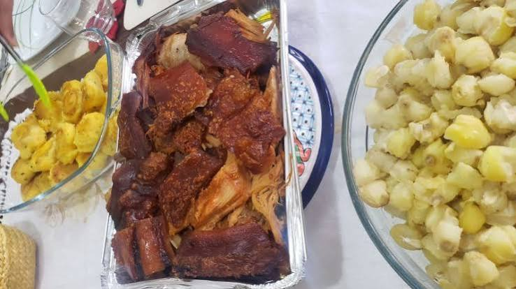
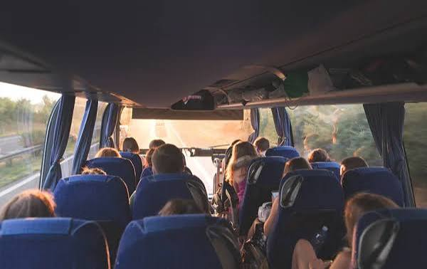
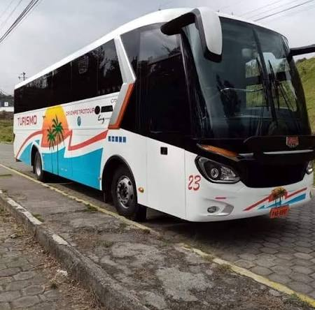
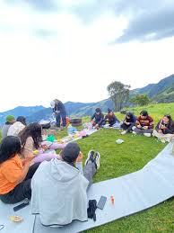

Lo que ponemos a tu alcance
Encontrarás todo lo necesario para una visita placentera: desde lugares donde alojarte, opciones de alimentación y guías que te mostrarán lo mejor de nuestro cantón.
Nuestros Servicios

Alojamiento y Hospedaje
Cabañas, fincas y hostales para todos los presupuestos. Descansa en un ambiente tranquilo, rodeado de naturaleza y calidez campesina.

Alimentación y Gastronomía
Prueba platos típicos preparados con productos frescos de la zona. Comida casera, bebidas naturales y dulces tradicionales.

Recorridos y Guías Locales
Conoce los ríos, fincas y sitios de interés acompañado de personas que conocen cada rincón y su historia.

Transporte y Movilidad
Opciones de transporte para llegar a los sitios más alejados y recorrer los caminos rurales sin complicaciones.

Espacios Recreativos
Zonas de descanso, miradores y áreas acondicionadas cerca de los ríos para disfrutar en familia o con amigos.

Productos de la Zona
Adquiere cacao, plátano, frutas frescas y artesanías directamente de los productores locales.
Consejos útiles
- ✅ Se recomienda reservar alojamiento con anticipación, especialmente en fines de semana y festivos.
- ✅ Consulta horarios y disponibilidad de guías antes de iniciar tu recorrido.
- ✅ Lleva efectivo, ya que en zonas rurales no siempre hay puntos de pago con tarjeta.
- ✅ No olvides repelente, sombrero y calzado cómodo para caminar por el campo.